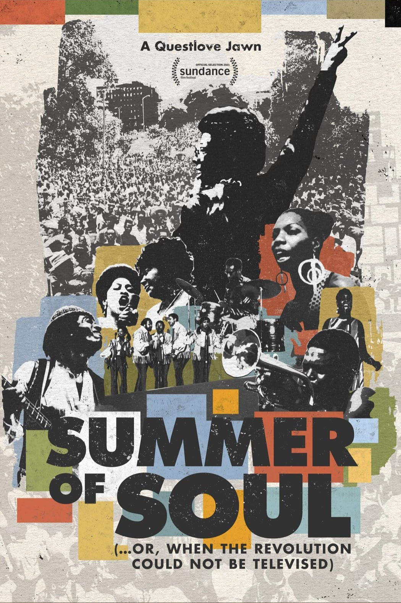
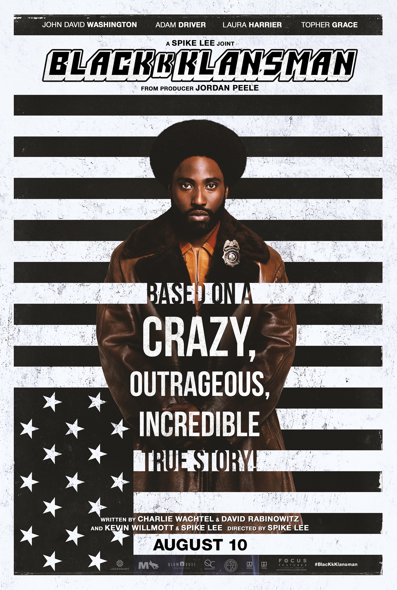

Season 56 (2024-2025)
-
 September 11, 2024Directed by John Sayles; Starring John Cusack, Clifton James, Michael Lerner, Christopher Lloyd
September 11, 2024Directed by John Sayles; Starring John Cusack, Clifton James, Michael Lerner, Christopher Lloyd
Eight Men Out
USA, 1988, 119 min, Color, PG
One of the greatest baseball teams in history and the odds-on favorite to win the 1919 World Series over the Cincinnati Reds, the Chicago White Sox appeared poised for victory. Undervalued and underpaid, eight team members were approached by a gambling syndicate to throw the series for more money than they would make winning.
*Noah Gittell, author of the recently-published book Baseball: The Movie, introduced the film and signed copies of his book. The film notes are an excerpt from the book.
Film Notes (Noah Gittell*): As shooting wrapped on Eight Men Out in the fall of 1987, several of its key actors came to the producers with a request. They wanted to keep their costumes, specifically those authentic 1919 Chicago White Sox uniforms in which they had lived out their dreams of being professional baseball players, if only for a few weeks. It's not uncommon for actors to keep their wardrobe, but the request was swiftly denied in this case. The reason given? The uniforms were promised to another production. The actors scoffed, certain that they were being lied to. There was just no chance another Black Sox movie was being made at that exact moment. They must have felt foolish when Field of Dreams came out two years later.
What is it about Shoeless Joe, anyway? He appears three times in the baseball movies of the 1980s, and never before or since. Why were the filmmakers of this era so fascinated with the 1919 Chicago White Sox, eight of whom were permanently banned from professional baseball for throwing the World Series? Specifically, why were they obsessed with Jackson? The Natural drew from his legend to tell the story of Roy Hobbs, who gets mixed up with gamblers but ultimately redeems all of baseball by doing the right thing in the end. Field of Dreams literally brings Shoeless Joe back to life. Then there's John Sayles' Eight Men Out, the most direct telling of the story of the Chicago "Black Sox." It's a true ensemble piece, with no single figure dominating the narrative. It probes the World Series from all sides: the players, journalists, gamblers, wives, owners, and fans, each with a different perspective on the historic scandal. But it ends on Jackson. He's disgraced by then, playing on a semi-pro team in Hoboken, New Jersey, under an assumed name. The final, sepia-toned shot is a freeze-frame of him looking almost directly into the camera, as if he had been the main character all along. Along with Jackie Robinson, he's one of the most central characters in all of baseball cinema. -
October 13, 2024Directed by James Whale; Starring Colin Clive, Mae Clarke, Boris Karloff
Frankenstein
USA, 1931, 70 min, B&W, Not Rated
In her novel, Mary Shelley referred to the creature Dr. Frankenstein fabricated from body parts as simply "the Monster". This film, which has influenced every horror film in its wake, brought to life a monster so iconic that its name has become confused with its creator and symbolic father.
Film Notes (Douglas Scott): If you were in the Bavarian Alps, on a snowy evening with four or five friends, what would you do if you were Mary Shelley, her husband Percy Bysshe Shelley, Lord Byron, and Byron's personal physician in 1818? Talking before a roaring fire, the group began to discuss the writing of stories. Mary suggested a story that involved the creation by a scientist of a human being. After a few hours of discussion, Mary went to her room and began to write.
At breakfast the next morning, she presented her friends with the first draft of a book she would call Frankenstein. Mary's friends were enthralled with the story they read. They appreciated the basic theme of the pursuit of knowledge: Dr. Frankenstein attempts to surge beyond human limits and access the secret of life, but discovers the dangers of seeking knowledge too quickly and too deeply.
On August 30th of this year 2024, Mary's Frankenstein celebrated the 206th anniversary of its publication. It still resonates with readers today. It is a seminal horror story. And the classic 1931 movie, loosely based on the book, retains the horror that Mary Shelley infused in her original story.
In the film, Dr. Henry Frankenstein and his assistant Fritz are putting the final touches on their creation — a human body. All they need is a brain.
Henry's former teacher, Dr. Waldman, shows his class the brain of a normal human, comparing it with the nefarious brain of a criminal. Henry sends Fritz to steal the healthy brain for their creation. Fritz accidentally damages the healthy brain and brings Henry the severely tainted one. But, they are ready to begin the experiment to create life. They invite Henry's girlfriend and others to witness what will happen when Henry and Fritz point the table skyward. Henry's creature gets an electrical charge from a storm raging overhead. The creature is brought to life!
Monsters in movies tend to fade in and out of our imagination. But, Frankenstein's monster is alive and ready to kill. He must be destroyed. How many and who will lose their lives? -
 November 10, 2024Directed by Guillermo del Toro; Starring Marisa Paredes, Eduardo Noriega, Federico Luppi
November 10, 2024Directed by Guillermo del Toro; Starring Marisa Paredes, Eduardo Noriega, Federico Luppi
The Devil's Backbone (El espinazo del diablo)
Mexico/Spain, 2001, 106 min, Color, R, Spanish w/subtitles
The world is full of monsters, full of ghosts. The scariest monsters are too often human. In this mournful ghost story set during the waning days of the Spanish Civil War, a boy whose father has been killed fighting for democracy is sent to a haunted orphanage.
Film Notes (Mark Van Hook): What is a ghost? A tragedy condemned to repeat itself time and again? An instant of pain, perhaps. Something dead that still seems to be alive. An emotion suspended in time. Like a blurred photograph. Like an insect trapped in amber.
So begins Guillermo del Toro's haunting (and haunted) fable The Devil's Backbone, his third feature and the one that marked a major leap forward in both his filmmaking and international acclaim. A ghost story set in a remote orphanage during the Spanish Civil War, the film explores themes that would define del Toro throughout his career: namely, the monsters that embody our deepest horrors, and the human monsters that are far worse.
The film opens with a stark image: a young boy lies dying, bleeding out from a head wound as another boy reacts in horror. How was he wounded? Was the other boy responsible? The film then flashes forward to the arrival of Carlos, a 12-year-old whose father has been killed in the war, as he is left to live at the orphanage and becomes acquainted with the other boys. Quickly he realizes they are not alone. A ghost haunts the orphanage, known to the others as "the one who sighs." Terrified at first, he soon comes to understand that the spirit is trying to communicate something vital to him, a message that may save his life – or end it.
Like his 2006 masterpiece Pan's Labyrinth, The Devil's Backbone is not subtle in showcasing del Toro's unique interest in the impact of war's horrors on children and in implicating the adults who fail to protect them. The film's true monster, when revealed, is shown to be as much of a creation of war as the bomb that lies, dormant, in the middle of the orphanage's courtyard. It may be adults who wage wars for ideology, revenge, or profit, but it is children who must bear the scars.
Scary, riveting, and deeply, profoundly sad, The Devil's Backbone is the work of a true modern master arriving at the height of his powers. -
 December 8, 2024Directed by Richard Benjamin; Starring Peter O'Toole, Mark Linn-Baker, Jessica Harper
December 8, 2024Directed by Richard Benjamin; Starring Peter O'Toole, Mark Linn-Baker, Jessica Harper
My Favorite Year
USA, 1982, 92 min, Color, PG
When drunken, washed-up, swashbuckling star Alan Swann (a perfectly cast O'Toole) agrees to make an appearance on a live television program in 1950s New York, a junior writer and lifelong fan (Linn-Baker) is tasked with babysitting his charming but unruly charge. Mayhem, pratfalls, laughter, and fun ensue.
Film Notes (Doug Scott): What is your favorite year? Some people have more than a few; others have difficulty thinking of one, but not Benjy Stone (Mark-Linn Baker). For him, that year was unequivocally 1954 when he met his idol, Alan Swann (Peter O'Toole), a former swashbuckling movie star, now an over-the-hill womanizer with a drinking problem.
In 1954, Benjy worked as a junior comedy writer for the Comedy Cavalcade show. When King Kaiser (Joseph Bologna), the show's headliner, tries to kick the unreliable Swann off the show, Benjy defends his idol. Consequently, Benjy is assigned the near-impossible task of keeping Swann sober and guaranteeing that he shows up for the live telecast.
Along the way, Benjy and Swann share stories of their lives and their problems. Benjy has an overbearing mother and an unrequited love for the show's production assistant, K.C. Downing (Jessica Harper). Swann's myriad problems include an estranged daughter, a seeming inability to act responsibly, and his love of drink which leads to his unpredictability and unreliability.
Will Alan Swann make the telecast? Will he be reasonably sober? Will he be a hit or a flop? More importantly, will Swann find the courage to reconnect with his daughter? And what about Benjy? Will he win the heart of K.C. Downing? What makes 1954 Benjy's favorite year? Find out in this uproariously funny comedy and joyful ode to the early days of television. -
January 12, 2025Directed by Martin Ritt; Starring Richard Burton, Oskar Werner, Claire Bloom
The Spy Who Came in from the Cold
UK, 1965, 112 min, B&W, Not Rated
At the height of the Cold War, a spy (Burton) undertakes one final perilous mission in East Germany to flush out a mole in MI-6, nicknamed the "Circus" by insiders. From the acclaimed best-seller by John le Carré, director Ritt captures a world where nothing is black and white; only seemingly endless shades of grey.
Film Notes (Karen Bender): At the height of the Cold War, in the year that John F. Kennedy was assassinated in Dallas, John le Carré wrote The Spy Who Came in from The Cold, a novel that portrays Western espionage efforts as morally ambiguous and in conflict with democratic values. The novel was an international bestseller and remains highly regarded today. This is an espionage story that contradicts the Technicolor exploits of James Bond. Spy work is an infernal business at best.
Two years later, Martin Ritt directed the cinematic adaptation of le Carré's novel. The story follows Alec Leamas (Richard Burton), an MI-5 agent who was brought in after a disastrous operation in Berlin. Alec fails at "real life" and campaigns to be given an opportunity to redeem his reputation. Alec is sent back to East Germany ostensibly under the cover of defection. In reality, MI-5 has tasked Alec with instituting a disinformation campaign in Germany.
As the plot evolves with its twists and turns, Alec becomes disenchanted with his prospects and realizes that he's viewed by MI-5 as a disposable commodity. Will Alec survive this operation, both physically and with his humanity restored? Will he shrug off the effects of dehumanization that living in a world colored with shades of grey has caused?
The moody black-and-white cinematography depicts the tone of the story. Cold War Germany is grey and dismal. I usually disagree with Paul Simon on this point, but in this film, things really do look worse in black and white. -
 February 2, 2025Directed by Sofia Coppola; Starring Bill Murray, Scarlett Johansson, Giovanni Ribisi
February 2, 2025Directed by Sofia Coppola; Starring Bill Murray, Scarlett Johansson, Giovanni Ribisi
Lost in Translation
USA, 2003, 102 min, Color, R
Two lonely, lost Americans adrift in Tokyo meet and forge an unlikely friendship. He is older; an actor whose career is on the skids. She is younger; a wife who has accompanied her husband on a photo shoot. Somehow, miraculously, they see each other, hear each other, get each other in this valentine to the wonders of chance friendships and the city of Tokyo itself.
Film Notes (Mark Van Hook): Sometimes a movie hits just right. In 2003, Lost in Translation was that kind of movie. In many ways, it still is. In hindsight, it's remarkable that Sophia Coppola's sophomore directorial effort became a massive hit.
Its story, at least on paper, is anything but riveting: two lonely people visiting Tokyo meet, hang out for a few days, form a connection, and then part ways. That's it. Its leads weren't exactly box office, either – Scarlett Johansson had yet to become a household name, and Bill Murray, though experiencing a minor career reinvention as a serious actor, had long since ceased to be a major draw. It didn't matter. Every now and then a movie comes along that transcends its surface limitations and just plain connects.
Murray plays Bob Harris, a famous American movie star visiting Tokyo to shoot a whiskey commercial. Jet-lagged and world-weary, he drinks away his sorrows in the hotel bar, wondering how he became so unhappy. Then he meets Johansson's Charlotte, an equally unhappy twenty-something visiting Tokyo with her husband, a hotshot photographer (Giovanni Ribisi, in what has subsequently been revealed to be a thinly-veiled portrayal of Coppola's then-husband Spike Jonze). Charlotte sparks something in Bob and the two form an instant connection as they spend the next several days quietly exploring, bonding, laughing, fighting, reconciling, and, finally parting. Maybe they even fall in love.
Why in 2003 did we care so much about the relatively trivial problems of these two impossibly privileged people? Why should we care about them in 2025? Because Lost in Translation understands what it means to be deeply, existentially lonely, a feeling that transcends privilege, class, or ethnicity. Coppola's film recognizes that regardless of one's social status, real joy is found in deep connection to other people, and no amount of money can buy the simple pleasure of sharing an experience with someone who gets you. In an increasingly digital age when more people than ever are experiencing a deep loneliness, that aching longing for connection feels more relevant than ever. -
 March 9, 2025Directed by Robert Altman; Starring Tim Robbins, Greta Scacchi, Fred Ward
March 9, 2025Directed by Robert Altman; Starring Tim Robbins, Greta Scacchi, Fred Ward
The Player
(Members' Choice!)
USA, 1992, 124 min, Color, R
A self-admitted Hollywood player himself, Altman casts a satirical insider's eye at the cutthroat corporate Hollywood world. From its audacious and renowned eight-minute opening tracking shot, through a constellation of stars in cameo roles to its upbeat Hollywood ending, his satire of the morally bereft studio exec remains funny, suspenseful, and hugely entertaining.
Film Notes (Patricia Webb): Have you ever felt threatened for not returning a call? Threatened anonymously. Threatened with death from a distance… but the threats are getting closer. Oh well, we'll get back to that. The Player, 1992 American. Directed by Robert Altman, written by Michael Tolkini, stars Tim Robbins, et al., is frequently described as a scathing, cynical, satirical black comedy/mystery. The film opens with a historic sustained eight-minute unbroken tracking shot. What follows is a retrospective Bonfire of 1980s Vanities.
Robbins plays Griffin Mill. The name, perhaps an ersatz of sorts; Cecil B. De Mille and DW Griffith both spring to mind. However, I invite you to consider this as our first step into Altman's paradigm. Whatever else Griffin Mill is, the name is a transparent allusion to a grist mill. Hollywood grinds them up and spits them out, as it were. Through Mill, Altman opens a peep hole into the world of Hollywood's ultimate insider. It's as though Altman himself is saying, "Do you see what I gotta deal with here, folks?"
Griffin Mill, a Hollywood studio executive, deals and schemes his way to the top as he flows through the Hollywood elite in his casual '90s double-breasted suits as over-sized as his ego. His dubious moral compass gives us a glimpse into the heart of darkness that is the legendary studio system. Griffin's nature is displayed in how he treats his employee/love interest, Bonnie. Bonnie Sherow (Cynthia Stevenson), a sweet, smart, direct, honest, energetic, young professional becomes perfect fodder for the Hollywood grist mill. Griffin Mill needs Bonnie. He uses her for her brains and ideas, for romance, and as a substitute for his own humanity as he sluffs off unwanted assignments and solicitors for her to handle. Bonnie is just a placeholder for Griffin. She's there until he spies someone new – June Gudmundsdottir (Greta Scacchi), the girlfriend of David Kahane (Vincent D'Onofrio), Mill's imagined nemesis.
Now, getting to those threats I mentioned. Griffin is taunted by "death" threats via postcards and phone messages. Threats that most people with a clear conscience would find nonsensically weird but maybe intriguing. Not so with Griffin. He panics. Although the list of possible suspects is quite long, Griffin stalks and murders his very first suspect, David Kahane with his bare hands. What in the orange-juice-after-toothpaste world is happening here? We sure didn't see that coming.
Perhaps there is no place for perfection in this world, but surely there is room for mastery of technique. Let's consider the technique of the cameo; the placement, the purpose, and the flirt with breaking the fourth wall. Wikipedia says that The Player contains sixty-five cameos of Hollywood actors. These cameos are masterfully used, masterfully placed, and masterfully woven into the story. Then there are the other cameos, the secret cameos – just for us insiders. I'll give you a tip a few paragraphs down.
But first, let us consider – if an actor is not merely appearing, but rather is scripted to play themself, is it really then a cameo? The Player certainly has actors cast in regular parts and a fair amount of true cameo appearances. There are also actors cast to play themselves as actors playing a role. But then there are some actors in "cameo" roles with scripted dialogue. You just know that at some point in Cher's scripted dialogue, the director said, "CUT". And then proceeded to explain to Cher how to say something the way Cher would. And then she says, "I'm Cher. I think I know how I talk." And then Altman says, "I need you to say it like…" Cher, putting her hand up to shush him, "I'm Cher." Altman, "Yes, but…"Moving on, let's talk meta.
Meta /mëtę/ adjective
1. Making or showing awareness of reference to oneself or to the activity that is taking place, especially in an ironic or comic way.
2. Self-referential; at a higher level.The Player is a layer cake of meta. Much like being in a cult (I'm told), this particular system of Meta doesn't go higher up, it only goes farther in. Let's look at a few instances:
During the opening tracking shot, Walter Stuckel (Fred Ward), studio security chief, has lines referencing several other films renowned for their tracking shots. META film nerd. The name-dropping starts during this opening shot. Julia Roberts' name is dropped conspicuously more than once. A few seconds later, during the title sequence, Lyle Lovett's name appears in the credits. The very Lyle that Julia marries in real life only months after the film opens. Julia Roberts appears as an actor in only the movie-within-the-movie portion of our film; she and Lovett had no scene together. Susan Sarandon, Tim Robbins's power couple partner in real life, also makes an appearance in the movie-within-the-movie scene. META-nepotism.
Speaking of nepo-babies, Great Scacchi and Vincent D'Onofrio play the oddly paired couple June Gudsomething and David Kahane. They also had absolutely no scenes together. In the last scene of the film (said to have been shot in the summer of 1991), Greta, now with Griffin, looks to be full-term pregnant. In real life, Scacchi and D'Onofrio actually were a couple and actually having a child together the year The Player was released. Supercalifragilisticexpi-META-docious.
At the funeral of Mill's murder victim, David Kahane is eulogized by Phil (Brian Brophy). Phil is dressed and styled exactly like Craig Schwartz will be in the 1999 film, Being John Malkovich. John Cusack, a cameo in our film, will play Schwartz in an iconic high-level self-referential film with several cameos. Both of these films were shopped around for years. Imagine yourself pitching both of these films to studios. Give me your 25-word log line. Meta-within-Meta.
At an hour and twenty-five minutes in, the camera pans over the gala crowd and rests on Cary Brokaw, who sits among other true Hollywood insiders. This secret cameo is the ultimate self-reference. Cary Brokaw, a total Hollywood player, is CEO of Avenue Pictures and Executive Producer of The Player. He rejected the script twice, in 1989 and 1990. By 1991, however, he went forward with the project, rescuing it from being shelved. META insider bucks.
If you were to rate Hollywood cheese on the tier list of cheesy, from an exquisite raw milk Beaufort d'Ete of Savoie to Kraft individually-wrapped shingles, where does this land? At an hour and forty-three minutes in, while wooing Greta, Griffin lists the essential elements of what makes a movie. Towards the end of his list is SEX. Then bam! Fade to his sex scene with Greta. That's right, he listed his elements of a Hollywood movie in their order of appearance in this very movie. META in a nutshell. -
 April 13, 2025Directed by François Truffaut; Starring Jacqueline Bisset, Valentina Cortese, Dani, Alexandra Stewart
April 13, 2025Directed by François Truffaut; Starring Jacqueline Bisset, Valentina Cortese, Dani, Alexandra Stewart
Day for Night (La nuit américaine)
France/Italy, 1973, 115 min, Color/B&W, PG, French w/subtitles
Deriving its title from a term for shooting a nighttime scene in the daylight with a special filter, Day for Night follows a harried director (Truffaut) as he struggles to complete a flimsy melodrama. "A movie for people love movies" declares a tagline form an original poster. The film delivers on that promise.
Film Notes (Patricia Webb): You have a dark superpower. Deep within your retina, the rod and cone photoreceptors optimize the blue end of the color spectrum so that you can see better in low-light conditions.
To recreate a spectral adaptation similar to your eye, cinematic techniques known as Day for Night are used to simulate a night scene while filming in outdoor daylight. We'll hear this technique described in the film's dialogue.
Truffaut opens Day for Night with a long tracking shot voiced with detailed technical direction to the cast and crew by director Ferrand (played by Truffaut). The manifestation of auteur theory, Day for Night becomes a tribute to cinema and a tribute to making cinema. It is a film made by a film lover, with film lovers, for film lovers. We, as an essential part of this isosceles arrangement, become entangled in the crisis amid chaos, the diplomacy amid frustration, and the order amid disruption as Ferrand shoots Meet Pamela, the film within.
Meet Pamela may not be the type of movie a cinephile would invest time in, but we can invest ourselves in the talents and efforts of the people who make those movies. Interspersed with the shooting of Pamela, we are served mini exposés of life on a movie set. Part gossip page, part documentary, we get vignettes of cast and crew as they meander with purpose. Oh no, there's imminent danger! But then, comforting safety. We're at a breaking point! OK, time for soothing reassurance. Oh my gosh, be careful! But it's all going to be just fine. Such is the life for Truffaut's Ferrand.
Jacqueline Bisset plays Julie Baker, a British actress playing Pamela, an alluring beauty who captures the heart of her new father-in-law, with whom she runs off. But then he dies.
Jean-Pierre Léaud plays Alphonse, a young French actor playing Pamela's husband. Mirroring his wife running off in the film within, Alphonse is heartbroken when his girlfriend/script girl runs off with a stuntman during production. He's gonna need money for the whorehouse.
Valentina Cortese plays Severine, a volatile Italian actress playing Pamela's mother-in-law. She's past her starlet prime, can't find her way around on set, and only works with the aid of champagne. For reasons no one knows, but everyone understands, we all have confidence that she'll come through for us.
Meet Pamela gives us the absurd (perhaps that's a strong word, but you get where I'm going) so that we can appreciate the reality. Day for Night gives us the reality to appreciate the illusion.Read Roger Ebert's review of Day for Night at Great Movies. -
May 11, 2025Directed by Ceyda Torun; Starring Yaman Barlas, Sari, Arzu Göl
Kedi
Turkey, 2016, 79 min, Color, Not Rated, Turkish w/subtitles
Torun's documentary provides a well-needed reminder that human beings are capable of love, warmth, solicitude and kindness. While the title is Kedi (Turkish for cats) and the stars are feline, the supporting players are humans who affectionately care for these street cats of Istanbul.
Film Notes (Karen Bender): First of all: You don't need to love cats to love this film.
Cat people have heard all the arguments: Cats are too independent and don't need people. This film supports part of this theory. Cats are indeed very independent, but as in all things, it takes a village to keep them healthy. This Turkish documentary relays the story of the symbiotic relationship between the street cats of Istanbul and the human community that loves and cares for them without claiming to own any of them.
Istanbul is teeming with cat life. Cats are on doorsteps, awnings, and balconies, and are often seen moving along the sidewalks with their human counterparts. The cats are feral. They've never lived with humans, but they comfortably coexist as community members.
Think about it: When's the last time you've seen a cat leisurely strolling along the sidewalk of a major city? Or a small town, even? In our world, cats run, dodge, and hide away. Not so in Istanbul. There, the citizens make a communal effort to feed these cats, take them to the vet when sick, and get to know the individual cats. They may name them, but they don't own them, and they rarely make pets of them. The cats are neighbors and friends but are not subordinates.
The documentary is told from the feline point of view as select feline "characters" go about their day, rounding up food, protecting their kittens, hunting for vermin, and very often walking into an open door to take a nap inside a welcoming shop window before sauntering off to make their rounds. The camera was mounted atop a toy car to effectively capture the action from the cats' vantage point.
Kedi was nominated for sixteen awards, with six wins, including the North Carolina Film Critics Awards. This magical documentary purrs along with good feelings. You never know - you just may find yourself becoming a believer.
Pawnote: In preparing these Film Notes, I viewed Kedi for the umpty-umpth time at home. My two cats' gaze was riveted to my TV screen. They especially loved the feline cuisine (foreign food!) and the hunting scenes. They have very good taste and sat there, intrigued. Until they annoyed each other, bopped each other on the head, and split the scene. That's cats for you! -

June 8, 2025Directed by Questlove; Starring Stevie Wonder, Nina Simone, Sly and the Family Stone
Summer of Soul
USA, 2021, 118 min, Color, PG-13
In the summer of '69, for six consecutive Sundays and a mere one hundred miles from Woodstock, the Harlem Cultural Festival hosted an epic event that celebrated Black history, culture, fashion, and music with headliners such as Mahalia Jackson, B.B. King, Max Roach, The Staple Singers, and the 5th Dimension. Thompson rescued, edited, and assembled a hitherto lost-to-history cache of festival archival footage that revives a milestone moment.
Film Notes (Doug Scott): For those of you who are old enough, where were you in 1969? Watching the New York Mets win the World Series? Witnessing the first man set foot on the moon? Eagerly learning while watching a new program called Sesame Street? Tuning into Laugh-In? Did you make it to Woodstock?
Or maybe the Harlem Cultural Festival was more to your taste? Just one hundred miles from Woodstock, all told over 300,000 people gathered in Harlem on six Sundays to hear a stellar lineup that included Mahalia Jackson, B.B. King, Stevie Wonder, Nina Simone, the 5th Dimension, Sly and the Family Stone, Gladys Knight and the Pips, Max Roach and the Staple Singers.
During the festival, Tony Lawrence and producer Hal Tulchin recorded forty hours of videotape. The tapes were then stored in a basement and remained untouched and forgotten for fifty years. Musician and first-time director Questlove discovered this treasure trove and interspersed the highlights with interviews and new footage. The result is a joyous and powerful documentary that opened the 2021 Sundance Film Festival and walked away with the Audience Award as well as the Grand Jury Prize.
Critics unanimously lavished praise on the film. One critic called it "The best music documentary I've ever seen." Winner of the Academy Award for Best Documentary, this film brilliantly captures a moment in time and celebrates performers and performances that define the best of our culture.
Editor's Note: If you watched the Oscars in 2021 and you don't recall seeing this film being awarded the Oscar, that's because the presentation of this film's award was unfortunately eclipsed by the infamous "Slap Heard Round the World." -

July 13, 2025Directed by Spike Lee; Starring John David Washington, Adam Driver, Laura Harrier
BlacKkKlansman
USA, 2018, 135 min, Color, R
The hoary cliché "truth is stranger than fiction" raises its head once again with this biographical crime story of a Black detective (Washington) and his Jewish partner (Driver) infiltrating the Colorado Springs KKK in the 1970s. Timely, provocative, funny, devastating, wry, blunt, and brilliant, BlacKkKlansman finds one of America's great filmmakers at the top of his game.
Film Notes (Karen Bender): Imagine that you're a rookie African-American detective who happens to be the first of your race to serve in the role in the Wonder Bread city of Colorado Springs. The 1970s in all their radical glory are happening around you, and you've committed to "serve and protect" the citizenry. You express your black identity by wearing your hair in an Afro, albeit carefully maintained to regulation length. In short, you're straddling two worlds.
Unfortunately, the powers that be in the police department aren't exactly sure what to do with a college-educated you, so they put you in the records room until you press for more challenging work. You get moved to a desk in the situation room, but the desk has nothing on it but a phone. No cases to work, no evidence to evaluate. While you're at the task of manning that desk, you peruse the paper, hoping the phone will ring. One day, you notice a recruitment ad for the Ku Klux Klan, and on a whim, you make a call. The Klan has an answering machine, so you leave a message. Unbelievably, someone calls you back, and before you know it, you're part of an undercover operation. Of course, there are a few inherent problems....
Sounds unlikely, doesn't it? However, this is a true story artfully brought to the screen through the epic storytelling of the great Spike Lee. John David Washington (son of Denzel) stars as Ron Stallworth, the black officer in charge of the Klan undercover project. He is joined by Flip Zimmerman (Adam Driver), the white officer who, of necessity, becomes the face of the operation. After all, Ron can't meet the Klan members in person, can he? Or can he??
What prevents BlacKkKlansman from becoming a whacked-out police procedural is entirely due to Lee's keen observations and insights about his characters and the world they inhabit. As we watch the undercover officers infiltrate the Klan, Ron and his sidekick are forced to confront their own identities and prejudices as we, the audience, share the experience.
BlacKkKlansman is a thoughtful, readily accessible feature film from Spike Lee that infuses the Human Comedy with a deadly serious message. -
August 10, 2025Directed by Akira Kurosawa; Starring Toshirô Mifune, Takashi Shimura, Keiko Tsushima
Seven Samurai (Shichinin no samurai)
Japan, 1954, 207 min, B&W, Not Rated, Japanese
East meets West in a legendary film that remains one of the greatest, most influential, and just plain entertaining epics of all time. A beleaguered village hires a down-and-out samurai to gather a small band of warriors to protect them from marauding bandits in this absorbing story of hope, sacrifice, honor and courage.
Film Notes (Britt Crews): One of the most influential, celebrated, venerated, and outright loved films in cinematic history, Seven Samurai's actual completion is one of life's miracles. Director Akira Kurosawa's relentless pursuit of historical accuracy down to the tiniest detail tripled — nearly quadrupling — the original budget. He insisted on building an entire village on location rather than the usual soundstage because: "the quality of the set influences the quality of the actors' performances… It restricts the shooting, but encourages the feeling of authenticity."
Rather than one camera, the director employed three, including the relatively new telephoto, arguing: "If I had filmed it in the traditional shot-by-shot method, there was no guarantee that any action could be repeated in the same way twice."
The weather fought him. Frequently, exhaustion overcame him. He had trouble finding enough horses. Twice during production, budget overruns led the producers at Toho to shut down production and seriously consider firing Kurosawa. The original 148-day shooting schedule ballooned into a year. The delays caused the climactic battle scene, planned for the summer, to be filmed in snow and freezing weather, threatening the health and safety of both cast and crew.
Despite everything, production of Seven Samurai eventually wrapped with a final price tag five times the average Japanese film.
The movie's premise is simple: In 16th-century Japan, a village's peasant farmers, tired of being harassed and robbed by bandits, resolve to hire ronin (masterless samurai) to defend their harvest and themselves. The peasants can offer only food; they have no money. A motley crew of seven who are willing to work for food is assembled. None are the lone invincible samurai warrior of legend, but ordinary individuals who struggle between their all-too-human foibles and the samurai code of honor.
The resulting film, an epic saga that transcends time and location, will be screened in all its recently restored 4K glory.Read Roger Ebert's review of Seven Samurai (Shichinin no samurai) at Great Movies.